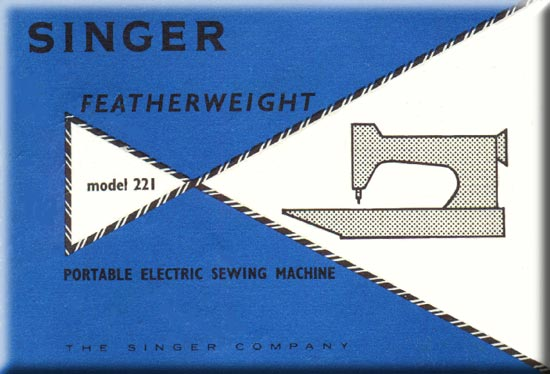
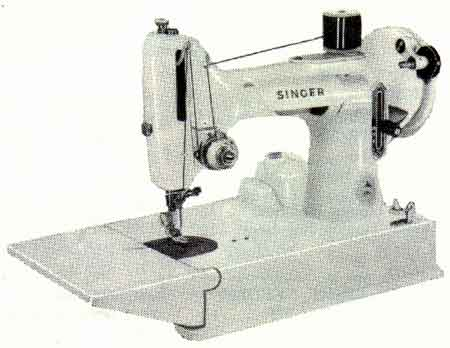
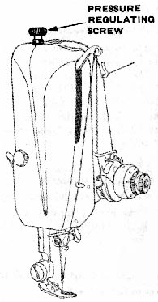
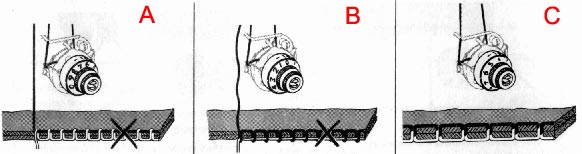
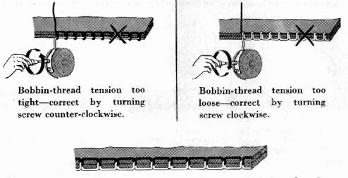

Your Featherweight has five basic controls that enable you to direct the machine to sew just as you want it to. You will use some of these controls every time you sew; others, only occasionally. We suggest that you get acquainted with all of them now, however, so that you will be ready to use them with ease as the need arises.
No. 1 Electrical Controller
No. 2 Stitch Length Regulator
No. 3 Pressure Regulator
No. 4 Needle-Thread Tension Regulator
No.5 Bobbin-Thread Tension Regulator
Let us begin with the control that makes the machine go.
Before you put the plug in your wall outlet, be sure that the voltage and number of cycles (stamped on the plate on top of the motor) are within the range marked on the electric meter installed by your power company.
Speed Controller. Speed of machine is regulated by amount of pressure on pedal of foot controller.
SAFETY : DISCONNECT PLUG FROM ELECTRICITY SUPPLY WHEN MACHINE IS NOT IN USE.
The numbers on either side of the lever represent the approximate number of stitches per inch. The higher the number, the shorter the stitch.
In general, lightweight fabrics require short stitches (a high number setting) and heavyweight fabrics require longer ones (a low number setting).
To set stitch length --
To stitch in reverse --
This screw regulates the degree of pressure that the presser foot exerts on the fabric.
Pressure should be heavy enough to prevent the fabric from slipping sideways and light enough to carry the fabric without marking it.
In general, heavy fabrics require heavier pressure than lightweight fabrics.
But surface finish and fabric texture must also be considered: crisp fabrics, for example, require more pressure than soft fabrics.
The numbers on the dial represent the degree of tension on the needle thread. The higher the number, the tighter the thread.
Correct needle-thread tension is important because too tight a thread will cause fabric to pucker.
Too loose a thread, on the other hand, will produce slack stitches and weak seams.

A = Needle-thread tension too tight -- correct by setting dial to lower number
B = Needle-thread tension too loose -- correct by setting dial to higher number.
C = A perfectly locked stitch results with upper and lower tensions balanced so that needle and bobbin threads are drawn equally into fabric.
This "regulator" is simply a screw on the bobbin case. (For instructions on removing bobbin case see below). A very slight turn of the screw nearer the thread slot on the bobbin case will produce a noticeable change in bobbin-thread tension.
You will seldom need to adjust bobbin-thread tension. Usually it is possible to obtain correct tension by adjusting the needle-thread tension alone.

A perfectly locked stitch results with upper and lower tensions balanced so that needle and bobbin threads are drawn equally into fabric.